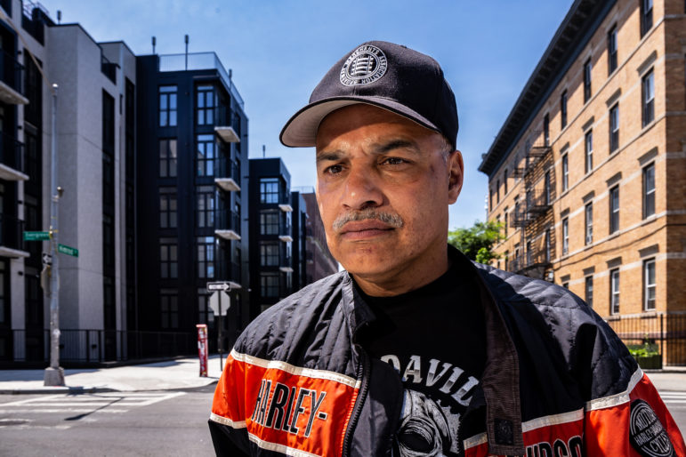
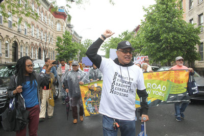

In 2019, Camacho helped relaunch the Knickerbocker Ave Puerto Rican Day parade, and he also founded the Magnífico Youth Sports Association.
In 2019, Camacho helped relaunch the Knickerbocker Ave Puerto Rican Day parade, and he also founded the Magnífico Youth Sports Association. Robert Camacho is a longtime resident of North Brooklyn. Born of Puerto Rican descent, Camacho was born in Mayagüez, Puerto Rico on May 12th, 1961. He moved to the Bedford Stuyvesant section of Brooklyn when he was 3 months old until 1974 when he moved to the Bushwick section of Brooklyn. Camacho currently resides in Bushwick and has remained a resident since 1974.
Camacho is a product of the New York City public schools and graduated from High School Redirection, I.S. 111 Enrico Fermi Intermediate School, P.S. 26.
Camacho has been active in the community for over 30 years – as a member of Community Board 4 for 32 years and the District Chair for the last 3 years, and as a leader and organizer in the community. Camacho spent 5 years working on the Bushwick Community Plan and regularly organizes toy drives and food drives. He was also active in the The Racial Impact Analysis legislation drive in the City Council, and the fight for fair housing at the Broadway Triangle.
Robert Camacho is running for State Committee Member in the 54th Assembly District to preserve and protect the communities of BedStuy, Bushwick, Cypress Hills, and East New York. As a lifelong resident of district 54, Camacho is committed to fighting for real affordable housing and social services that our communities need.
In 2019, Camacho helped relaunch the Knickerbocker Ave Puerto Rican Day parade, and he also founded the Magnífico Youth Sports Association.
Robert Camacho has been endorsed by New Kings Democrats, Lambda Independent Democrats, and and Brooklyn Can’t Wait.